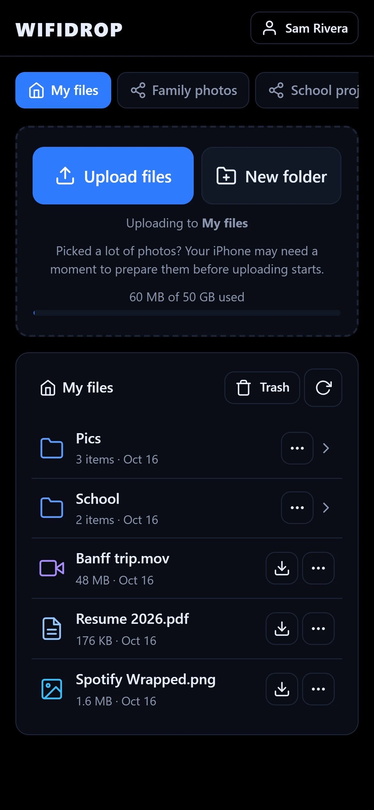
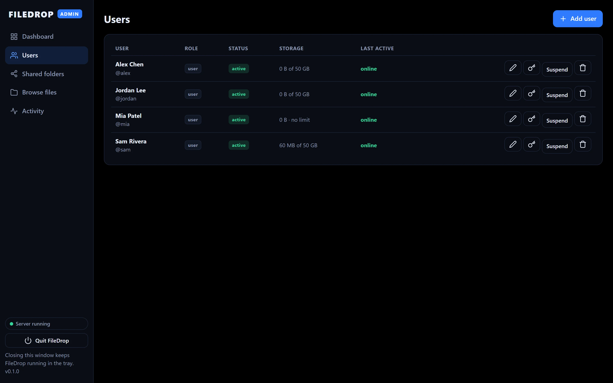
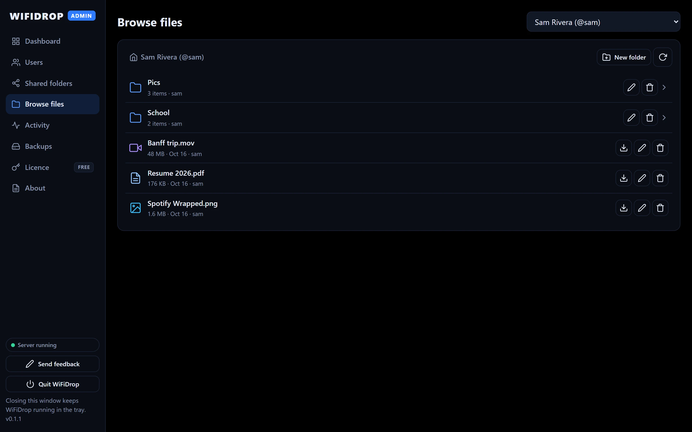
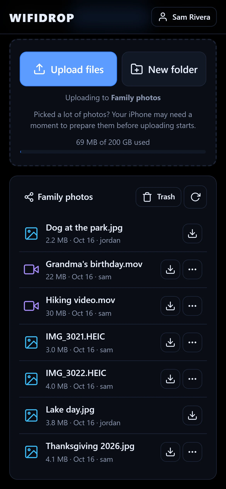
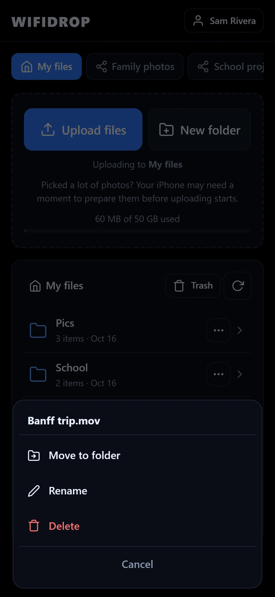

Your own private file drop,
hosted on your PC.
Everyone on your Wi-Fi can send photos, videos and documents straight to your computer from their phone's browser. No app to install, no cloud, no monthly fee.
No account with us needed. Your files never leave your network.


Up and running in three steps
FileDrop runs quietly in your system tray. People connect from any phone or computer on the same network.
Install and pick a folder
Run the installer and choose where uploaded files are saved, like a big second drive.
Add people
Create an account for each person. They choose their own password the first time they sign in.
Scan and send
They scan the QR code on your screen, sign in and tap Upload files. That's it.
A real Windows app for the person in charge
Click through the admin window. Close it any time and FileDrop keeps running in the tray.



Nothing to install for anyone else
People open a link in the browser they already have, on iPhone, Android or any computer.



Built for families, classrooms and small teams
Everything you need to collect and share files on your own terms.
Private folders
Every person gets their own space. Nobody else can see it, not even other users.
Shared folders
Make folders like "Family photos" and choose who can view, upload or manage.
Uploads that don't give up
Send many files at once. Uploads resume by themselves if the Wi-Fi drops.
You stay in control
Pause uploads or downloads, sign out a device, suspend an account, set storage limits.
Encrypted on your network
Connections use HTTPS, passwords are hashed and the admin window can be locked with a PIN.
Works in any browser
iPhone, Android, Windows or Mac. Nothing to install on the devices that connect.
Your files stay yours.
FileDrop runs on your own Windows computer. Files are stored in the folder you choose, and other people reach them over your local network.
We don't upload your files to our servers, and the app doesn't send us file names, file contents or usage data.
Stays on your PC
- Every uploaded file
- Accounts and passwords (hashed)
- Activity history and logs
We never receive
- Your files or file names
- Who uses FileDrop or how
- Analytics or crash reports
Try it free
FileDrop Free is a complete product, not a trial. Pro adds backups, guest upload links and more, later this year.